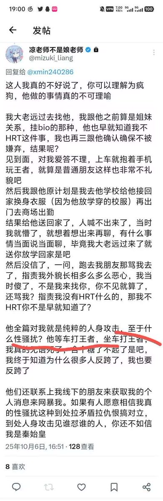

🍀🍥竹蜻蜓🍥🍀
@zqtlovekris99
@LingJiaXin233 @mizuki_liang 呃，所以见面打王者让他觉得你很不礼貌就性骚扰你吗，这对吗，这话给我一种感觉就是【至于性骚扰，因为他一直在打王者】通篇也没有对自己的行为做任何说明

凌嘉欣🍥
@LingJiaXin233
最后声明（求转）1/n
针对@mizuki_liang 的言论，我想提出几个问题：
1.看红线句子，“至于性骚扰”和“打王者荣耀”有什么必然关系吗，请问凉老师您能否扪心自问您没有任何的性骚扰行为？我说你有性骚扰行为你户口本爆炸你敢接吗？
2.我只是对凉老师的性骚扰行为表示谴责，不涉及mtf和肥胖人群 https://t.co/hyvbrZ973L